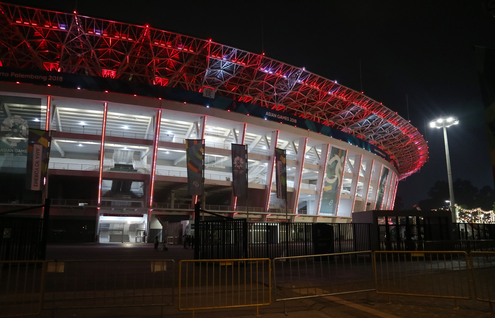
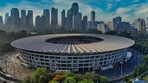

Gelora Bung Karno (GBK) Stadium
GBK Photos



Description of GBK
Gelora Bung Karno Stadium or also known as GBK is Indonesia's largest and most iconic stadium with a seating capacity of up to 77,000 people. Located in Central Jakarta, it is built for the 1962 Asian Games and names after the country's first president, President Sukarno, there it serves as the centerpieace for major sporting events both national and international, including football, athletics, concerts. It has been renovated several times to meet more modern standards, most recent being the renovation for the 2018 Asian Games. When not in use it serves as a place where locals can practice and exercise.